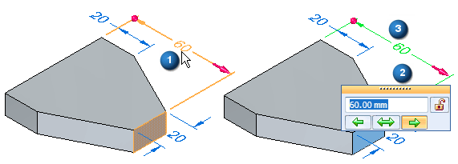
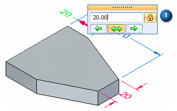
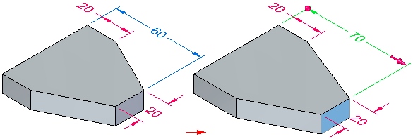
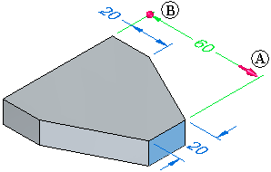
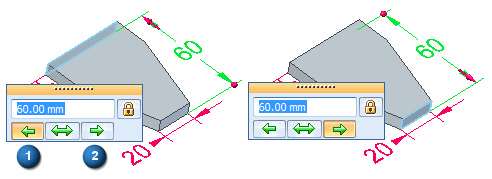
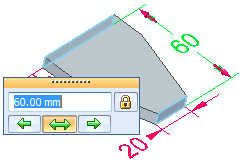

Editing model dimensions
Dimensions attached to model edges are PMI dimensions. PMI dimensions are created indirectly through sketch migration, and by directly adding them to the model. You can edit any dimensions attached to synchronous feature edges to modify models. You can determine if a dimension can be directly edited by its color. To learn about creating and editing PMI dimensions, see the Help topic, PMI dimensions and annotations.
Model dimension editing tools
When you click dimension text, several model editing and selection tools are displayed:
Changing model size
You can change the size of the model by changing the value of one or more PMI dimensions. For example, when you select the dimension text for the 60 mm dimension (A), the dimension value edit handle appears [(B)(C)]. The dimension value edit handle indicates how the model will react if you type a new value for the dimension.

Controlling what is changed
You can use the Lock button (A) on the Dimension Value Edit dialog box to ensure dimensions and the model geometry they control remain unchanged when you edit other model dimensions.

For example, you can lock both of the 20 mm dimensions before you edit the 60 mm dimension. Then, when you edit the 60 mm dimension to 70 mm, the 20 mm dimensions do not change.

PMI dimensions display using different colors depending on whether they are locked or unlocked.
Controlling the direction of change
When you highlight or select the dimension text on a 3D dimension, the dimension terminators update to indicate which side of the model will change when you edit the value of the dimension. A 3D arrow (A) appears on the side of the model which will be modified, and a 3D sphere (B) appears on the side of the model which remains stationary.

You can also use the options on the dialog box to control how the model reacts to a dimension edit. Use the direction arrows to specify which side of the model is modified (A), and which side remains stationary (B).

You can also drive a symmetric edit by selecting the symmetric arrow.

Controlling face selection using the Advanced Design Intent panel
When you choose a dimension to edit, you can add or remove faces from the selection set by changing the options in the Advanced Design Intent panel. This controls how the model behaves when you modify it.
To learn more, see the Help topic, Using the Advanced Design Intent panel .